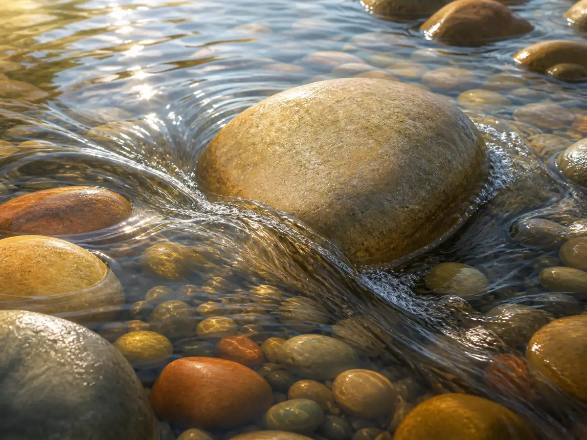
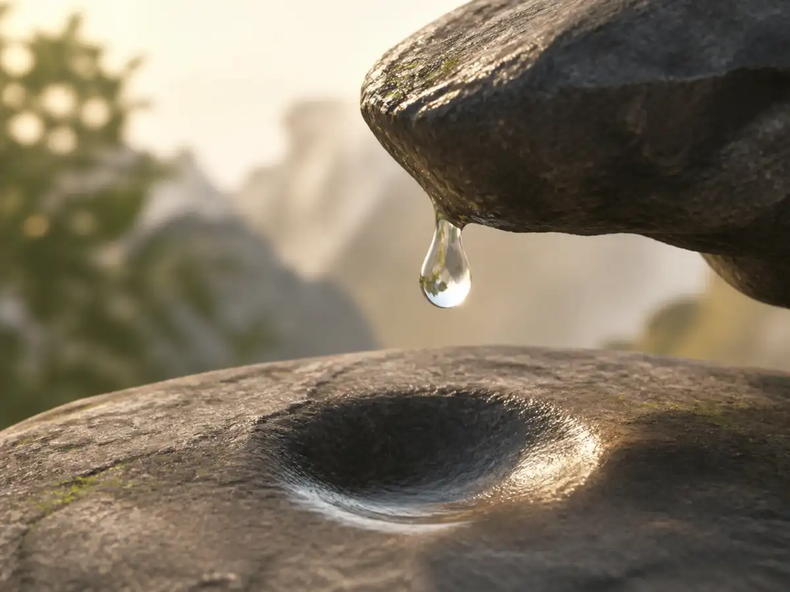

老子的智慧：水为什么不一定要“赢”？
Laozi’s Wisdom: Why Does Water Never Need to Win?
Page 1
小溪里的一块石头
A Stone in the Stream

Clear stream water divides around a stone and continues downstream.
把一块石头放进浅浅的小溪里，看看水会怎么走。水碰到石头以后，会分成两股，从两边绕过去，然后在下游重新合在一起。石头还在那里，水并没有把它推开。可是，水也没有停下来。
两千多年前，一本和Lǎozǐ · 与《道德经》和早期道家思想密切相关的古代思想家。思想联系在一起的中国古书，很喜欢用水来想事情。这本书就是Dàodé Jīng · 与老子和早期道家思想关系密切的经典。。里面有一句特别有名的话：“上善若水。”紧接着，书里又说，水“善利万物而不争”，还愿意待在人们往往不喜欢的低处。
水看起来并不威风。也许，这正是老子觉得它有意思的地方。
Put a stone in a shallow stream and watch what happens. The water reaches the stone, divides, slips around both sides, and joins together again farther downstream. The stone is still there. The water has not pushed it away. But the water has not stopped either.
More than two thousand years ago, a short Chinese book traditionally connected with Lǎozǐ · 老子 · The ancient thinker linked with the Dao De Jing and early Daoist ideas. used water again and again to think about how people live. One of its most famous lines begins: “The highest good is like water.” Then the Dàodé Jīng · 《道德经》 · A short classic linked with Laozi and early Daoist thought. explains why. Water benefits many things, yet it does not compete with them. It also flows toward low places that people often avoid.
Water does not seem very impressive. That may be exactly why Lǎozǐ found it interesting.
Page 2
水总往低处走
Water Goes Low
人常常想往高处去。坐得高一点，好像比较重要；排在前面，好像比后面更好；被大家看见，也常常比没人注意更让人高兴。水却总往低处走。
雨从天上落下来，顺着坡往下流；小溪汇进山谷，河流继续向更低的地方前进。水不会专门爬到最高的石头上，让大家看看自己有多厉害。可是，植物需要水，动物要喝水，庄稼离不开水，人们也常常在有水的地方生活。
《道德经》看着这种很普通的事情，问出了一个不太普通的问题：一样东西一定要抢到最高的位置，才算重要吗？老子的答案不是这样。水待在低处，一样可以做很多事。
People often want to move up. A higher seat can seem better than a lower one. Being first can seem better than being last. Being noticed can feel better than being ignored. Water does the opposite.
Rain falls from the sky and runs downhill. Streams collect in valleys. Rivers keep moving toward lower ground. The water does not search for the highest rock so that everyone can see it. Yet plants need it. Animals drink it. Fields depend on it. People build their homes and towns near it.
The Dàodéjīng looks at this ordinary habit of water and turns it into a question: Does something have to fight for the highest place in order to be useful? For Lǎozǐ, the answer was no. Water can stay low and still matter enormously.
Page 3
绕过去，也是在往前走
Going Around Is Still Going Forward
《道德经》还说，水“不争”。可是，“不争”并不等于什么也不做。再看看小溪里的那块石头。水推不动它，就换一个方向，从旁边绕过去，然后继续往前。
树枝掉进小溪里挡住了路，水也可能从下面钻过去，从缝里渗过去，或者慢慢找到另一边的出口。水并不需要证明：“我一定比这块石头更强。”它只需要继续走。
《道德经》里常常有这样的想法：有些事情不用每次都靠更大的力气解决。用力有时当然有用，可有时候越使劲，反而越容易和眼前的东西死死顶在一起。水不吵，也不炫耀。它只是一直寻找能走的地方。
The book also says that water “does not compete.” That does not mean water simply gives up. Go back to the stone in the stream. The water cannot push the stone aside, so it changes direction. It finds another opening and keeps going.
A branch falls across a little creek. Water gathers behind it, slips under it, seeps through gaps, or finds a new edge to follow. It does not need to prove that it is stronger than every obstacle. It needs to keep moving.
This is close to an idea that appears throughout the Dàodéjīng: using less unnecessary force. Sometimes pushing harder helps. Sometimes pushing harder only creates a bigger struggle. Water seems to know the difference without making any noise about it.
Page 4
柔软也可以很有力量
How Can Something Soft Be Strong?

A drop falls from one rock toward a smooth hollow in the stone below.
用手碰一下水，它马上让开；握紧拳头去抓，它又会从指缝里流出去。石头看起来当然比水硬得多。可是，再看看一条河留下的山谷。
软得抓不住的水，可以带走泥沙，推动石块，冲出河道，还能在很长很长的时间里改变山坡和土地。这些事情不是一滴水一下完成的。水只是一天又一天、一年又一年地继续流。
《道德经》第七十八章也注意到了这个奇怪的地方：天下好像没有什么比水更柔弱，可面对坚硬的东西，水又有一种特别的力量。老子很喜欢这样的反差。
柔软，不一定就是没有力量。待在低处，不一定就是不重要。绕开一步，也不一定就是输了。有时候，正因为可以改变方向，才更能一直走下去。
Touch water with your hand and it moves away. Close your fist around it and it slips through your fingers. A rock feels much stronger. But now look at a river valley.
Water that seems too soft to hold in your hand can move soil, carry stones, deepen channels, and reshape a landscape. A river does not do all of that in one dramatic moment. It keeps moving, day after day and year after year.
Chapter 78 of the Dàodéjīng points to this strange contrast: nothing seems softer and weaker than water, yet hard things cannot always defeat it. Lǎozǐ liked contrasts like this.
Soft does not always mean powerless. Low does not always mean unimportant. Stepping aside does not always mean losing. Sometimes what looks weak lasts because it can bend, change direction, and continue.
Page 5
再看看那条小溪
Look at the Stream Again
《道德经》并不是一本很长的书，而且它常常不把一个道理解释得清清楚楚，再让读者背下来。它更喜欢给人看一些东西：水、山谷、门、空出来的地方、没有雕刻过的木头。然后让人自己想。
水特别适合这样做。不需要先学会一个很难的哲学名词，也能看懂小溪怎样绕过石头，怎样流向低处；也能用手摸到水有多软，却同时知道一条河可以有多大的力量。
两千多年以后，这个画面还是很容易看懂。石头留在原地。水从旁边绕过去。然后，它继续向前。
The Dàodéjīng is a very short book, but it rarely explains its ideas the way a textbook would. It gives readers images: water, valleys, doors, empty spaces, uncarved wood. Then it leaves us to think.
That may be why water works so well. You do not need to understand a difficult philosophical word to watch a stream. You can see water move around a stone. You can see it gather in the lowest place. You can feel how soft it is and still know what a river can do.
More than two thousand years after the Dàodéjīng was written, the stone-and-stream picture still makes sense. The stone stays where it is. The water goes around it. And the water keeps going.